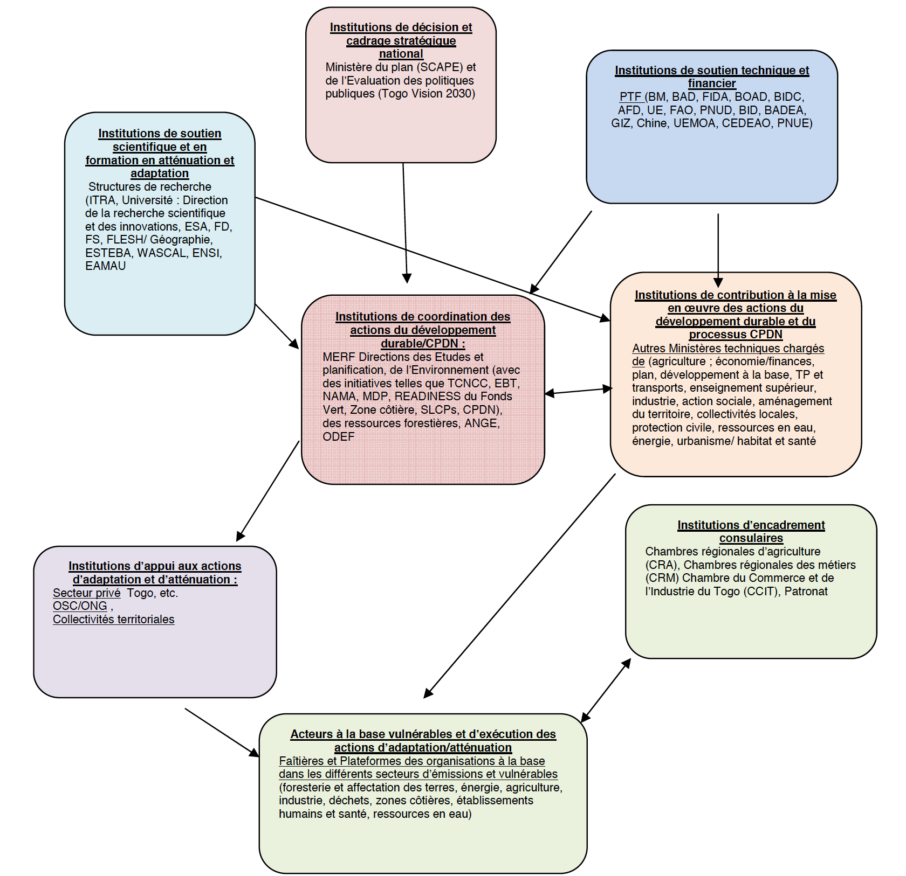

Septembre 2015
|
Type d’engagement |
Réduction des émissions de GES par rapport à un scénario de développement non maîtrisé. |
|
Périmètre |
Ensemble du territoire. |
|
Année de référence |
2010 |
|
Période d’engagement |
2020-2030. Cependant les efforts de mise en place du mécanisme institutionnel, de préparation des programmes et de mobilisation des ressources commencent dès 2016. |
|
Type de contribution |
Inconditionnelle et conditionnelle |
|
Secteurs pris en compte |
Energie ; agriculture ; affectation des terres, changement d’affectation des terres et foresterie ; établissements humains (bâtiments et villes) et santé ; érosion côtière. |
|
Gaz concernés |
CO2; CH4 ; N2O |
|
Niveau de réduction/cible inconditionnelle |
11,14% |
|
Niveau de réduction/cible conditionnelle |
31,14% |
|
Besoin en financement |
3,54 Milliards $US (Adaptation = 1,54 ; Atténuation = 1,10 ; Transfert de technologies=0,5 ; Renforcement de capacités = 0,4). |
|
Processus de planification |
Mise en place d’un système MRV (à élaborer) - Revue périodique de la mise en œuvre et mise à jour de la CPDN. |
|
Vision politique régionale |
Influencer et participer à la mise en place d’un développement climat-compatible sobre en carbone au niveau de la sous-région et de la région. |
Pays historiquement peu émetteur de gaz à effet de serre et n’ayant que très faiblement contribué à la crise climatique actuelle, le Togo est pourtant déjà fortement confronté aux conséquences néfastes des changements climatiques. Bien qu’il fasse partie des pays les moins avancés et qu’il doive faire face à d’importants besoins en termes de développement et d’adaptation, le Togo désire néanmoins contribuer aux efforts internationaux pour limiter l’accroissement de la température à 2°C en prenant des mesures d’atténuation. L’engagement du Togo est juste, équitable et ambitieux tout en prenant en compte les réalités nationales. Au-delà des engagements nationaux, répondre aux besoins présents et futurs en termes d’adaptation et s’engager sur une trajectoire de développement sobre en carbone nécessiteront une coopération et un soutien financier international transparent et inscrit dans la durée.
Le Togo, conscient de la nécessité de démultiplier les moyens d’actions, s’engage à promouvoir une vision régionale porteuse de développement pour les populations concernées dans un esprit de solidarité tout en participant à l’effort international de lutte contre les changements climatiques.
L’élaboration de la CPDN s’est faite sous couvert du Ministère de l’Environnement et des Ressources Forestières (MERF) selon un processus participatif et inclusif avec l’implication effective de toutes les parties prenantes.
Pays d’Afrique occidentale, le Togo est situé entre 6 et 11°de latitude nord et 0 et 1°40 de longitude est et a une superficie de 56 600 km². La pluviométrie moyenne varie entre 800 et 1 400 mm, avec une température moyenne de 27 à 28°C. Le pays dispose d’une côte maritime de 50 km soumise à l’érosion. Les terres cultivables sont estimées à près de 3,4 millions d’hectares (64% du territoire) dont seulement 55% étaient cultivées en 2010. L’aire totale des terres irrigables est d’environ 86 000 hectares et la superficie des bas-fonds exploitables de175 000 hectares. Les eaux de surface et souterraines sont estimées entre 17et 21milliards de mètres cube d’eau en moyenne par an, pour une consommation annuelle d’environ 3,4 milliards de m3.Les formations végétales sont fortement dégradées et le taux de déboisement est de l’ordre de 15 000 ha/an contre un rytdme de reboisement qui ne dépasse guère 3 000 ha annuellement.
La population togolaise était de 6 191 155 habitants en 2010 (4ème RGPH, 2010), avec un taux de croissance annuel moyen de 2,84%. Sur cette base, le pays devrait compter 7 121 673 habitants en 2015dont 60% aura moins de 25 ans. Le Togo devra donc relever le défi de trouver des emplois décents à cette population lorsqu’elle arrivera sur le marché du travail. Le Produit intérieur brut (PIB) est passé de 1 581,3 milliards de FCFA en 2010 (année de référence) à 2 076,6 milliards de FCFA en 2015, soit un PIB par habitant de respectivement 255 419 FCFA et 291 583 FCFA. Malgré les progrès réalisés (0,459 en 2012 -Rapport IDH 2013- soit une amélioration de 0,007 par rapport à 2010), l’Indicateur de Développement Humain (IDH) du Togo reste faible(159ème rang sur les 187 pays considérés). La pauvreté demeure très élevée au Togo et concerne encore 58,7% de la population en 2011 (SCAPE, août 2013) contre 61,7% en 2006. Le taux de pénétration de l’éclairage dans les foyers est de 23% selon le Plan d'action national d'efficacité énergétique (PANEE juillet 2015).L’enquête QUIBB 2011 (questionnaire unifié des indicateurs de base de bien-être) montre que les principaux indicateurs sociaux ont généralement progressé, même s’ils demeurent préoccupants : taux net de scolarisation dans le primaire (87,8%), taux d’alphabétisation des adultes (60,3%, avec une nette disparité selon le sexe : 74,0% pour les hommes et 47,9% pour les femmes), taux de morbidité (20,6%), taux d’accès à l’eau potable (56,1%), proportion des ménages disposant d’installations sanitaires (53,1%), taux de malnutrition (27,9%), taux de ménages ayant des difficultés à subvenir à ses besoins alimentaires (49,5%), taux d’utilisation des services de santé (66,2%), taux d’actifs sans emplois (24,3%).
Les orientations stratégiques nationales qui sous-tendent les politiques et les programmes sectoriels s’inscrivent dans le document Vision Togo 2030, en cours d’élaboration et la Stratégie de croissance accélérée et de promotion de l’emploi (SCAPE) 2013-2017. La SCAPE du Togo offre un cadre de développement à moyen terme pour réaliser la Déclaration de Politique Générale (DPG) basée sur les Objectifs de millénaire pour le développement (OMD) couvrant la période 2006-2015 et faire du Togo un pays émergent d’ici 15 à 20 ans. Les politiques et stratégies sectorielles en vigueur relatives aux secteurs économiques vulnérables ou émettant des GES sont consignées dans le tableau 1en annexe II.
Le Togo s’est engagé depuis plusieurs années dans une stratégie volontariste de développement durable et de lutte contre le réchauffement climatique. Les axes principaux sont la lutte contre : les mauvaises pratiques de production dans les secteurs économiques ; la non maîtrise de la démographie ;et l’incidence élevée de la pauvreté qui est exacerbée par les impacts négatifs des changements climatiques, renforçant la vulnérabilité des secteurs productifs et la pression sur les ressources naturelles. Cette volonté politique se décline, entre autres, dans le Plan national d’action pour l’environnement (PNAE) ; le Programme National de Gestion de l’environnement (PNGE) ; la Stratégie nationale du développement durable (décembre 2011) ; la Stratégie nationale de renforcement des capacités pour la gestion de l’environnement (octobre 2008) ; le Programme national de Réduction des émissions des gaz à effet de serre liées à la déforestation et à la dégradation des forêts (REDD+) 2010-2050 ; la Stratégie nationale de réduction des risques de catastrophes au Togo (décembre 2009) ; le Cadre national des priorités à moyen terme (CNPMT) pour le Togo (2010-2015) et le Plan d’action national pour la gestion des ressources environnementales marines et côtières. En outre, le Togo, à travers son adhésion à la Climate & Clean Air Coalition (CCAC), pourra mobiliser des fonds pour le financement des actions d’atténuation des GES et des polluants climatiques de courte durée.
La lutte contre les changements climatiques et la mise en œuvre du développement durable s’inscrivent dans les principales initiatives institutionnelles suivantes : (i) existence d’un ministère spécifiquement dédié à la gestion des politiques de l’environnement et des ressources naturelles depuis 1987 ; (ii) création de la Direction de l’environnement au sein du Ministère de l’environnement et des ressources forestières (MERF) en charge, notamment, de coordonner les mécanismes des conventions dans lesquelles le Togo est engagé ; (iii) création du comité national sur les changements climatiques ; et (iv) mise en place du cadre institutionnel de préparation de la Troisième Communication Nationale (TCN).En matière d’engagements internationaux relatifs à l’environnement, le Togo est Partie à la Convention Cadre des Nations Unies sur les Changements Climatiques (CCNUCC),à la Convention sur la Diversité Biologique (CDB) et à la Convention des Nations Unies sur la lutte contre la Désertification (CCD). Les principaux textes nationaux adoptés relatifs aux changements climatiques sont : la loi N° 2008-005 du 30 mai 2008, portant loi-cadre sur l’environnement en remplacement du Code de l’environnement ; la loi N° 2008-009 du 19 juin 2008 portant Code forestier ; le décret N°2006-058/PR du 05 juillet 2006 fixant la liste des travaux, activités et documents de planification soumis à étude d’impact environnemental (EIE) et ses arrêtés d’application ; la loi N° 99-003 du 18 février 1999, portant Code des hydrocarbures de la République Togolaise.
L’adaptation et le développement constituent la priorité pour le Togo sachant que les gaz à effet de serre (GES) émis en 2010 (année de référence) par le pays ne constituaient que 0,05% du total des émissions mondiales. Prenant en compte la vulnérabilité des secteurs économiques et les conséquences sociales et environnementales des effets des changements climatiques, le Togo place en tant que priorité nationale, l’élaboration et la mise en œuvre d’une stratégie et d’options en termes d’adaptation qui auront des incidences sur les scénarios d’atténuation en termes de co- bénéfices.
Le Togo entend, pour contribuer à la lutte contre les changements climatiques, renforcer la résilience des systèmes et moyens de production en s’engageant sur une trajectoire de développement sobre en carbone. Cette vision est en cohérence avec les engagements pris à l’échelle internationale et les orientations stratégiques nationales relatives à la nécessité d’une croissance répondant aux enjeux du développement durable, inclusive et génératrice d’emplois décents, contribuant à la réduction de la pauvreté, équitable et protectrice des ressources naturelles. Ces points clefs sont repris dans le Plan national d’adaptation aux changements climatiques (PANA) élaboré en décembre 2008 et dont les objectifs sont relatifs : (i) à la protection des vies humaines et leurs moyens de subsistance, ressources, infrastructures et environnement ; (ii) à l’identification des besoins urgents et immédiats d’adaptation des communautés de base aux impacts néfastes des changements et de la variabilité climatiques ; et (iii) à l’intégration des mesures et objectifs d’adaptation aux politiques sectorielles et de planification nationale.
Les observations du climat1 sur la période 1961 à 2012 révèlent une augmentation des températures sans équivoque ainsi qu’une diminution de la pluviométrie et du nombre de jours de pluie. La tendance linéaire de la moyenne nationale des données de température sur la période 1961 à 2012 indique un réchauffement de 1°C. D’un autre côté, selon les scénarios de base réalisés dans le cadre de la Troisième communication nationale (TCN), les simulations effectuées avec SimCLIM 2013 font état dans le cas du scénario pessimiste RCP8.5, d’un accroissement global des températures moyennes annuelles par rapport à leur niveau actuel oscillant entre 0,60 et 0,71°C en 2025 et entre3,6et 4,5°C en 2100 au Togo en fonction de la latitude considérée. Les précipitations annuelles connaîtraient aux mêmes horizons une augmentation en tous points du territoire respectivement de 4 à 8 mm en 2025 et de 18 à 39 mm de pluie par rapport à leur niveau actuel. Les impacts associés sur les principaux secteurs considérés comme sensibles sont :
i) énergie : une analyse spatiale révèle que la région des savanes déjà confrontée au plus important taux de pauvreté et à des ressources ligneuses qui se raréfient, devrait connaître la plus faible capacité de réponse avec des conséquences sur l’aggravation de l’insécurité alimentaire et nutritionnelle et une augmentation de la pauvreté monétaire et non monétaire. L’approvisionnement en bois-énergie de Lomé et de la région maritime deviendrait presque impossible ;
ii) ressources en eau : en intégrant les taux de croissance actuels et les prévisions de croissance démographique, les disponibilités en eaux seraient très affectées avec une diminution des stocks résultant du réchauffement du climat et une fortepollution des réserves d’eau potable par les inondations, l’intrusion saline dans les aquifères côtiers etl’envahissement des terres par les eaux ;
iii) agriculture, foresterie et affectation des terres : la diminution de l’offre des produits végétaux, carnés et halieutiques et de l’approvisionnement des villes pouvant entraîner des tensions sociales, voire des crises sociopolitiques, la perte de revenus des producteurs, la dégradation des terres, la perte de la biodiversité, l’invasion des insectes nuisibles aux cultures, au bétail et aux produits halieutiques, la pénurie en bois, la disparition des zones humides ;
iv) établissements humains (bâtiments et villes) et santé : l’augmentationdes dépenses au niveau de l’Etat, des collectivités et des ménages en vue de construire de nouveaux habitats, des infrastructures socio-économiques et de reloger les sinistrés, l’exode rural massif, le développement de maladies comme le paludisme, les diarrhées, les affections cardio-vasculaires et respiratoires et autres nécessiteront des dépenses supplémentaires, entraîneront des famines et augmenterontl’insécurité alimentaire ;
v) zone côtière : l’érosion des côtes, occasionnant des pertes de biens et de ressources physiques, menaceront l’ensemble de la zone côtière qui concentre plus de 90 % des unités industrielles du pays.
Le Togo est confronté à d’importants défis en ce qui concerne l’adaptation, qu’il s’agisse de prendre en compte la réalité du climat d’aujourd’hui et les effets attendus dans un futur plus ou moins lointain, conséquences des changements prévisibles annoncés. Les besoins, ci-dessous identifiés sous forme de mesures, consistent à : (i) renforcer les actions en faveur de l’efficacité énergétique et des technologies sobres en carbone ; (ii) promouvoir une gestion intégrée et durable des ressources en eau ; (iii) renforcer la résilience des systèmes et moyens de production du secteur de l’agriculture; (iv) renforcer les capacités d’adaptation des établissements humains (bâtiments et villes) aux changements climatiques ; et (v) protéger la zone côtière.
La démarche retenue par le Togo est de mettre en œuvre un portefeuille de mesures et de projets en réponse aux enjeux de l’adaptation et des priorités nationales de développement, sachant que les options d’adaptation qui auront des impacts sur l’atténuation des émissions de GES seront privilégiées, dans la mesure du possible.
Ces besoins répondent aux préoccupations nationales de l’ensemble des acteurs concernés. Ils ont été quantifiés et validés en concertation et, au-delà du processus national mis en place dans le cadre du lancement et du pilotage de la CPDN, les différents acteurs impliqués ont été rassemblés en groupes tdématiques relatifs aux secteurs les plus vulnérables. Il s’agissait de procéder à la priorisation des secteurs et sous-secteurs et d’identifier les principales mesures prioritaires ainsi que les conditions de leur mise en œuvre. Pour chaque secteur, la démarche a été de considérer le degré d’impact sur les priorités nationales de développement telles que l’emploi, la réduction de la pauvreté, l’augmentation des revenus des bénéficiaires et du PIB, l’incidence positive sur la croissance et le développement propre et sobre en carbone tout en prenant en compte les réalités climatiques d’aujourd’hui et de demain. Chacune des mesures sectorielles a ensuite été déclinée en une série d’activités opérationnelles complétée par une analyse économique pour évaluer les besoins en accompagnement financier.
L’analyse des données collectées a permis d’identifier les priorités, les mesures et les besoins en financement (tableau 2, Annexe IV). Les secteurs prioritaires sont dans l’ordre : 1er : Energie ; 2ème : Agriculture ; 3ème : Etablissements humains et santé ; 4ème : Ressources en eau ; 5ème : Erosion côtière ; et 6ème : Affectation des terres, changement d’affectation des terres et foresterie.
Le besoin total de financement est estimé à environ 1, 54 milliards USD de 2020 à 2030.
Le Togo entend utiliser une approche basée à la fois sur des contributions fondées sur les mesures à mettre en place et des contributions fondées sur les résultats afin de mieux faire ressortir les opportunités de co-bénéfices en matière de réduction des émissions de GES, qui découlent des synergies entre adaptation et atténuation.
La contribution du Togo aux efforts d’atténuation globaux se caractérise comme suit :
Figure 1 : Projections CPDN du Togo
Les mesures d’atténuation des GES du Togo dans les trois secteurs prioritaires, à savoir : Energie, Agriculture et Utilisations des Terres, Changement d’Affectation des Terres et Foresterie et les coûts y afférents (total : 1,1 milliards USD) sont les suivants :
(i) Dans le secteur de l’Energie, elles concernent la promotion de la biomasse dans les ménages, de l’électricité à base solaire et des transports Dans le domaine de la biomasse, Il s’agira de mettre en œuvre une politique volontariste (mesures incitatives, appui et formation des artisans, circuits de distribution appropriés, etc.) capable de promouvoir la vulgarisation de foyers améliorés qui permet une économie de bois et de charbon de bois de 50 à 60%. L’accent sera également mis sur l’introduction des équipements solaires dans des ménages et le renforcement des capacités des différents acteurs concernés. Au niveau du transport routier, les actions prévues visent à réduire de 20% la consommation de carburant d’origine fossile au Togo au cours de la période sous revue, à travers l’amélioration du réseau routier, la promotion de transports collectifs, la limitation de l’âge moyen des véhicules importés (à 5-7 ans) et la promotion des moyens de transports actifs (vélos, marche à pieds, aménagement des pistes cyclables). Coût : 460 millions USD.
Au niveau du secteur de l’Agriculture, les options d’atténuation sont identifiées dans les domaines de l’élevage, de la riziculture, des sols agricoles et du brûlage des savanes. Au niveau de l’élevage, les actions porteront sur l’introduction de fourrages pour une meilleure digestion des animaux, l’appui à la promotion de races locales et l’élevage extensif. Dans la filière riz, les actions visent la recherche et la promotion des variétés de riz pluvial, l’appui-accompagnement à une utilisation plus appropriée de la matière organique (décomposition plus rapide) dans les casiers rizicoles. Au niveau des sols agricoles, il sera réalisée une étude de caractérisation des sols agricoles par zone agro-écologique, un programme de recherche et d’appui sur les amendements organiques et syntdétiques dégageant moins de GES, l’étude et la promotion de la gestion optimale des déchets d’élevage et des résidus de récolte, la promotion des pratiques d’aménagement des sols visant à améliorer la fixation du carbone dans les sols agricoles et l’agroforesterie. Pour le brûlage des savanes, les actions prévues visent la lutte participative contre les feux de brousse. Coût : 140 millions USD.
Dans le secteur de l’Utilisation des Terres, Changement d’Affectation des Terres et Foresterie, les actions prioritaires sont relatives : (i) à la promotion des reboisements privés, communautaires et étatiques par la création de plantations et la promotion de l'agroforesterie sur les terres cultivées ; et à l'aménagement durable des forêts et leur protection (à travers la gestion des feux de brousse, la régénération des sites dégradés, la délimitation et l’aménagement des aires protégées et des sites touristiques) ; (iii) à l’étude cartographique des zones géographiques à fort potentiel pour le développement des biocarburants en lien avec les enjeux de sécurité Coût : 500 millions USD.
|
Calendrier et/ou période de mise en œuvre |
|
|
Calendrier de mise en œuvre |
Année de commencement de la contribution : 2020. Cependant les efforts de mise en place du mécanisme institutionnel, de préparation des programmes et de mobilisation des ressources commencent dès 2016. Année où la contribution prendra fin : 2030. |
|
Champ d’application et portée |
|
|
Gaz à effet de serre compris dans la contribution |
Dioxyde de carbone (CO2), métdane (CH4), hémioxyde d’azote (N2O). |
|
Secteur/sources couverts par la contribution |
Energie, Agriculture, Affectation des terres, Changement d’Affectation des terres et Foresterie. |
|
Zones géographiques couvertes par la contribution |
Tout le territoire national. |
|
Hypotdèses et approches métdodologiques |
|
|
Métdodologie pour la comptabilisation des émissions |
La métdode de comptabilisation pour l’inventaire des GES dans chaque secteur est celle des directives de la CCNUCC et des lignes directrices du GIEC pour les inventaires nationaux de gaz à effet de serre : 1996 Révisée, GPG 2000, GPG LULUCF 2003 et GL 2006. |
|
Potentiels de réchauffement de la planète |
Les valeurs utilisées en ce qui concerne le Potentiel de Réchauffement Global (PRG) des différents gaz à effet de serre sont celles recommandées par la CCNUCC : CO2 : 1, CH4 : 21 et N2O : 310 |
|
Approches concernant les émissions relatives à l’affectation des terres, le changement d’affectation des terres et la foresterie |
Les émissions nettes associées à l’affectation des terres, le changement d’affectation et la foresterie sont toutes comprises dans la contribution. |
|
Contribution nette des mécanismes internationaux de marché |
Le Togo est un pays Partie Non-Annexe I de la Convention Cadre des Nations Unies sur les Changements Climatiques (CCNUCC) et fait partie des Pays les Moins Avancés(PMA).Conformément à la déclaration des Ministres Africains à Marrakech en avril 2015, le pays souhaite encourager l’investissement dans des projets d’atténuation sur son propre sol grâce notamment au Mécanisme de Développement Propre (MDP) et au programme REDD+. |
|
Equité et Ambition |
|
Equité Le Togo est un petit pays qui n’émet quasiment pas de GES, et n’a donc quasi-aucune responsabilité dans le réchauffement climatique. Le Togo se propose à travers sa CPDN de s’orienter vers un développement durable sobre en carbone en encourageant les pratiques durables alors que la solution de facilité serait de simplement continuer à utiliser les potentiels fossiles encore disponibles. Selon le GIEC, les estimations mondiales des émissions de GES pour l’année 2010 sont de l’ordre de 40 000 MtCO2e. Les émissions de la République Togolaise sont estimées, la même année, à environ 20,45 MtCO2e et représentent environ 0,05% du volume global. Ces émissions sont donc insignifiantes par rapport aux émissions globales. Néanmoins, par la présente contribution, le Togo réaffirme son adhésion au principe de responsabilité commune mais différenciée et s’engage à prendre des mesures ambitieuses pour contribuer à l’objectif de 2°C. Cette contribution garantit une équité d’engagement. |
|
Ambition Grâce aux mesures déjà entreprises, le Togo va réduire ses émissions de façon inconditionnelle de 11,14% par rapport au scénario de référence en 2030. Le Togo s’engage à adosser à sa stratégie de renforcement de sa capacité d’adaptation et à ses impératifs de développement, une trajectoire de croissance sobre en carbone qui se traduira par une réduction conditionnelle de 20% de ses émissions de GES. Cette contribution ambitieuse vient soutenir les engagements de la communauté internationale. La contribution du Togo est également ambitieuse, car elle conduira à des transformations sur le long terme dans les secteurs clés de l’énergie, de l’agriculture et de l’affectation des terres, changement d’affectation des terres et foresterie, diminuant ainsi la vulnérabilité à venir des populations et des territoires concernés. |
Le Ministère de l’Environnement et des Ressources Forestières (MERF) entend organiser régulièrement des consultations pour réexaminer la mise en œuvre des mesures d’adaptation et d’atténuation contenues dans la CPDN. Il s’agira d’un processus itératif pour s’assurer que la CPDN est mise en œuvre et qu’elle est régulièrement à jour. Pour ce faire, le processus mis en place s’appuiera sur les cadres déjà existants :
La Stratégie de Croissance Accélérée et de Promotion de l’Emploi (SCAPE) 2013-2017 prend en compte la dimension changement climatique notamment au travers des actions inscrites au niveau du paragraphe 2.3.5.3 intitulé : Environnement, gestion durable des ressources naturelles et cadre de vie, de l’axe 5. Elles sont relatives :
(a) au maintien des services environnementaux des écosystèmes et de la préservation de la biodiversité ;
(b) à la gestion durable des terres, des catastrophes et des ressources naturelles ;
(c) à la lutte contre les changements climatiques qui est reconnue comme une préoccupation majeure du Gouvernement, notamment :
i) le renforcement du cadre institutionnel de mise en œuvre de la Convention-Cadre des Nations Unies sur les Changements Climatiques, des mesures d’adaptation et d’atténuation au niveau des principaux secteurs de développement ;
ii) le renforcement du dialogue national multi secteurs et multi acteurs ;
iii) l’actualisation et la mise en œuvre du plan national d’action pour l’adaptation aux changements climatiques ; et
iv) l’élaboration et la mise en œuvre d’une stratégie de développement à faibles émissions de carbone pour engager le pays à long terme dans le processus des mesures d’atténuation ;
(d) à la gestion durable de la zone côtière; et
(e) à la gestion durable du cadre de vie, y compris l’habitat et les déchets.
Il est aussi à noter que le changement climatique est ciblé comme l’un des cinq risques identifiés pour la mise en œuvre de la SCAPE ; toutefois, des dispositions ont été prises pour prendre en compte des mesures d’atténuations desdits risques. La CPDN répond à cette préoccupation.
Tous les programmes, stratégies et plans nationaux, à savoir : le processus du Plan National d’Action pour l’Environnement (PNAE), la Politique Nationale de l’Environnement, le document final du PNAE, le Programme National de Gestion de l’Environnement, la Stratégie Nationale de Développement Durable (SNDD), la stratégie nationale de réduction des risques de catastrophes au Togo, le Programme national de Réduction des émissions des gaz à effet de serre liées à la déforestation et à la dégradation des forêts (REDD+) (2010-2050), le Cadre National des Priorités à Moyen Terme (CNPMT) pour le Togo (2010-2015) et l’Adaptation de l’agriculture aux changements climatiques au Togo (ADAPT) ont tous prévu des mécanismes de planification, suivi et évaluation.
Le Togo dispose de plusieurs comités nationaux : le Comité national Changement climatique ; le Comité national PANA ; le Comité national NAMA ; et l’Autorité Nationale Désignée MDP. Tous ont des organes de suivi-évaluation que la CPDN mobilisera.
Par ailleurs, dans le cadre de l’institutionnalisation de son processus d’élaboration des communications nationales, le Togo s’appuiera sur certaines institutions, dotées de systèmes d’assurance qualité (AQ) et de contrôle de la qualité (CQ), avec lesquelles le Ministère en charge de l’environnement a établi un partenariat. Il s’agit des structures suivantes qui sont responsables des IGES et des mesures d’atténuation dans les secteurs concernés :
Cet ensemble sera complété par l’élaboration d’un système de Monitoring, Reporting et Vérification (MRV) qui intégrera les indicateurs d’adaptation et d’atténuation contenus dans la législation, les politiques, stratégies, programmes et plans existants afin de mieux suivre la mise en œuvre de la CPDN.
Le calendrier de mise en œuvre est consigné en annexe V.
Cette section décrit le soutien sous forme de financement, de renforcement des capacités, de transferts de technologies ou autres liés à la mise en œuvre de la CPDN. Les informations fournies couvrent l’adaptation et l’atténuation et pourront aider les partenaires internationaux à mieux comprendre les besoins et à cibler leur soutien au Togo.
L’ensemble de ces informations est contenu dans les documents d’évaluation des besoins de technologies ; les stratégies ou plans d’action nationaux sur le climat ; la stratégie de communication sur les changements climatiques et la transition vers l’économie verte ; les évaluations des besoins de capacités ; les évaluations des besoins d’investissements ; les Communications Nationales, les MAAN, le PANA, le PNIERN et a déjà été résumé dans la première partie de ce document.
La satisfaction des besoins identifiés sera déterminante pour permettre de renforcer l’efficacité de la mise en œuvre de la CPDN. Des efforts réels ont été fournis pour le développement des capacités humaines et institutionnelles lors de la CNI, DCN et TCN. Il reste néanmoins de nombreux besoins à satisfaire avant de disposer de la compétence et de l’expertise nationales nécessaires pour mener des initiatives réussies et durables dans le domaine des changements climatiques.
Le Togo, pour relever les défis du développement, de l’adaptation et mettre en œuvre sa feuille de route, est confronté à des besoins de renforcement de capacités. Il s’agit notamment de:
Coût : 0,4 milliard USD
Le processus d’institutionnalisation en cours permettra de former un plus grand nombre d’experts, de renforcer et d’équiper les centres de recherche et d’excellence sur les changements climatiques. En outre, le comité national CPDN sera pérennisé et doté de moyens appropriés lui permettant de jouer efficacement son rôle. Une cellule de coordination durable sera créée pour suivre et évaluer les activités de la CPDN.
Les besoins en transfert de technologies ont été identifiés et se présentent globalement comme suit :
Coût : 0,5 milliard USD
Pour mettre en œuvre sa CPDN, le Togo aura besoin de Trois, Cinquante Quatre (3,54) Milliards USD dont Un, Cinquante Quatre (1,54) Milliard $US pour l’adaptation et Un, Dix (1,10) Milliard USD pour l’atténuation, Zéro, Cinq (0,5) Milliard USD pour le transfert de technologie et Zéro, Quatre (0,4) Milliard USD pour le renforcement de capacités.
Ces estimations représentent les besoins financiers supplémentaires par rapport au coût des décisions nationales qui auraient été mises en œuvre de toute manière compte tenu des priorités nationales.
Le Togo abrite un certain nombre d’institutions régionales et sous-régionales comme la BOAD, la BIDC et le SABER qui ont mis en place des initiatives pour l’atténuation. Par ailleurs, la BOAD abrite aussi le Centre Régional de Collaboration (CRC) des mécanismes de développement durable de la CCNUCC. La BOAD a initié avec le CRC un processus d’assistance aux CPDN comme étant des canaux d’accès aux financements, à la technologie et au renforcement des capacités ou encore pour réaliser le Monitoring, Reporting et Vérification (MRV) des résultats des activités d’atténuation.
Le Togo, conscient de sa situation géographique, des institutions régionales et internationales qu’il héberge mais aussi des enjeux économiques de la sous-région, entend jouer un rôle régional particulier pour fédérer, mobiliser et partager une vision et des moyens d’actions communs avec les pays voisins. Il s’agit également de s’approprier un leadership dans la sous-région et la région, voire l’Afrique, pour un développement climat-compatible sobre en carbone.
ADAPT : Projet d’Adaptation de l’agriculture au Changement climatique
AFAT : Agriculture, Foresterie et autres Affectations des Terres
BAU : Business as Usual
BIDC : Banque d’Investissement et de Développement de la CEDEAO
BOAD : Banque Ouest-Africaine de Développement
CC : Changements Climatiques
CCNUCC : Convention-Cadre des Nations Unies sur les Changements Climatiques
CEA : Champ école agriculteurs
CEDEAO/ECOWAS: Communauté Economique des Etats de l’Afrique de l’Ouest
CH4 : Métdane
CNI : Communication Nationale Initiale
CO2 : Dioxyde de Carbone
CO2-e : Equivalent CO2 (Unité de mesure d’émissions des gaz à effet de serre directs prenant en compte le potentiel de réchauffement global de ces gaz)
CPDN : Contribution Prévue Déterminée au niveau National
DA : Donnée d’Activité
DCN : Deuxième Communication Nationale
DGSCN : Direction Générale de la Statistique et de la Comptabilité Nationale
FCFA: Francs de la Communauté Financière d’Afrique
FE : Facteurs d’émission
GES : Gaz à effet de serre
Gg : Gigagramme
GIEC : Groupe d’Experts Intergouvernemental sur l’Evolution du Climat
GIFS : Gestion intégrée de la fertilité des sols
GL: Guidelines
GPG : Good Practice Guidance
IEC : Organisation des campagnes de sensibilisation
LULUCF : Land Use Land Use Cover and Forestry
MDP : Mécanisme pour un Développement Propre
MRV : Monitoring Reporting Verification
N2O : Hémioxyde d’Azote
NAMAs : Nationally Appropriate Mitigation Actions
NE : Non estimé
PAFN : Plan d’Action Forestier National
PAN : Programmes d’Action Nationaux
PANA : Plan d’Action National d’Adaptation aux Changements Climatiques
PIB : Produit Intérieur Brut
PRG : Potentiel de Réchauffement Global
REDD : Réduction des Emissions dues à la Déforestation et à la Dégradation
SAM : Sans Aucune Mesure
SCAPE : Stratégie de Croissance Accélérée et de Promotion de l’Emploi
SRI : Système de riziculture intensif
TCN : Troisième Communication Nationale
UEMOA : Union Economique et Monétaire Ouest Africaine
|
Secteurs |
Documents de politiques et stratégies en vigueur |
Actions à mener |
|
Energie |
Plan stratégique du sous-secteur de l’électricité adopté en décembre 2010 Projet de politique énergétique nationale (POLEN) élaboré en octobre 2011 Plan d’actions national d’efficacité énergétique (PANEE) Togo, 2015-2020-2030 ; juillet 2015 Plan d’actions national des énergies renouvelables (PANER) Togo, 2015-2020-2030 ; août 2015 |
Adoption de la politique énergétique nationale ; Mise en place de mesures incitatives pour l’utilisation des énergies renouvelables ; Révision de la loi sur l’électricité et création d’une agence nationale d’électrification rurale. |
|
Transports |
Déclaration de Politique Générale du Gouvernement pour la restructuration du secteur des transports du 29 mai 1996 opérationnalisée en 2013, par l’élaboration d’une Stratégie Nationale de Développement des Transports au Togo (pas encore adoptée). |
Révision de la politique nationale actuelle des transports ; Adoption et mise en application des mesures de la stratégie nationale, notamment le texte limitant l’âge et la qualité des véhicules d’occasion importés. |
|
Affectatio n des terres et foresterie |
Plan d’Actions Forestier National (PAFN) 1994, actualisé en novembre 2011. Politique forestière du Togo (PFT) élaborée en novembre 2011. |
Elaboration des programmes structurants et mobilisation des financements adéquats dans une optique de partenariat public/privé. |
|
Agriculture |
Engagement dans le processus d’une Agriculture intelligente face au climat (AIC) dans le cadre de la mise en œuvre de la politique agricole de la CEDEAO et du NEPAD. Politique nationale de développement agricole du Togo (PNDAT) 2013-2022, validée au cours d’un atelier national les 22 et 23 novembre 2012. Existence du Programme national d’investissement agricole et de sécurité alimentaire (PNIASA). |
Initiation de programmes spécifiques d’adaptation à l’instar du projet Adapt en cours d’exécution, ainsi que des programmes d’atténuation |
|
Ressources en eau |
Politique nationale en matière d’approvisionnement en eau potable et assainissement en milieu rural et semi-urbain, élaborée en avril 2006 ; Plan d’Actions National pour le Secteur de l’Eau et de l’Assainissement(PANSEA) ; Stratégie de Gestion intégrée des ressources eau (GIRE) ; Code de l’eau (loi 2010/004 portant code de l’eau). |
Mise en œuvre des expériences pilotes basées sur la GIRE et dispositions pour une plus grande disponibilité des ressources en eau en quantité et en qualité. |
|
Etablissements humains et santé |
Existence d’une politique nationale de la santé ; Elaboration d’un projet de Politique Nationale d’Hygiène/Assainissement du Togo (PNHAT) soutenue par un Plan Stratégique ; Existence de la politique nationale d’urbanisme et de l’habitat ; Elaboration d’une stratégie nationale de logements. |
Révision de la politique d’urbanisme et de l’habitat en intégrant des mesures visant à l’efficacité énergétique et prenant en compte les risques de catastrophes ; Amélioration de l’efficacité de la gestion des autres politiques et del’offre de services en matière d’établissements humains (bâtiments et villes), pour renforcer la résilience des populations face aux effets des changements climatiques. |
Gaz compris dans la contribution :
Secteurs couverts par la contribution :
Figure 2 : Emissions par GES (Gg CO2-e) :

Figure 3 : Emissions par secteur clé (Gg CO2- Année de référence 2010 e) : Année de référence 2010

|
Mesures/Projets d’adaptation prioritaires |
Coûts en millions USD |
|
Secteur Energie |
176 |
|
Développement des énergies renouvelables (pour atteindre 4% du mix énergétique) : promotion des biocarburants et valorisation des terres dégradées ; formation et recherches de partenaires techniques et financiers pour la production d’énergies nouvelles et renouvelables ; détaxation à l’importation des équipements d’énergie solaire et autres énergies renouvelables |
40 |
|
Gestion durable des énergies traditionnelles (bois de chauffe et charbon de bois) |
7 |
|
Mise en place de stratégies d’économies d’énergie électrique |
9 |
|
Développement de mini réseaux hybrides pour l’électrification rurale |
30 |
|
Promotion des modes de transport sobres en carbone |
40 |
|
Promotion de nouvelles technologies propres dans le secteur de bâtiment |
50 |
|
Secteur Agriculture |
186 |
|
Promotion des variétés performantes résilientes aux Changements Climatiques |
10 |
|
Renforcement de la gestion intégrée de la fertilité des sols (GIFS) |
25 |
|
Définition/aménagement des couloirs et zones de transhumance |
20 |
|
Construction et/ou la réhabilitation des retenues d’eau pour la micro-irrigation et l’abreuvement du bétail en milieu rural dans toutes les régions. |
50 |
|
Appui à l’élaboration de la cartographie des zones sensibles aux changements climatiques |
6 |
|
Appui à la diffusion des bonnes pratiques agro-écologiques |
45 |
|
Promotion de systèmes de production rizicole très peu consommateurs d’eau et induisant de faibles émissions de GES (SRI : Système de riziculture intensif) |
30 |
|
Secteur Etablissements humains : villes et bâtiments, y compris déchets |
540 |
|
Renforcement de l’assainissement et du drainage des eaux pluviales dans les principaux centres urbains |
40 |
|
Aménagement et réhabilitation de la voirie urbaine dans les principaux centres urbains |
150 |
|
Promotion de la foresterie urbaine |
80 |
|
Gestion rationnelle et durable des déchets en milieu urbain |
160 |
|
Développement spatial harmonieux et équilibré des centres urbains : élaboration et mise en œuvre d’outils de planification urbaine |
50 |
|
Renforcement du cadre institutionnel et réglementaire concernant la santé et l’environnement |
15 |
|
Mise en place de mécanismes adaptés de surveillance, de partenariat, de financement et de suivi-évaluation |
10 |
|
Protection contre les risques de catastrophes |
35 |
|
Secteur des ressources en Eau |
191,3 |
|
Amélioration de la connaissance des ressources en eau |
16 |
|
Protection des ressources en eau |
50 |
|
Amélioration de la gestion de l’eau dans le secteur agricole |
20 |
|
Conservation des eaux de pluies et réutilisation des eaux usées |
35 |
|
Amélioration de la gestion des eaux souterraines |
70 |
|
Etude du potentiel du bassin sédimentaire côtier et résilience au CC |
0,3 |
|
Secteur Erosion côtière |
214 |
|
Amélioration du cadre règlementaire et de la gestion des connaissances du phénomène d’érosion côtière |
14 |
|
Réalisation des investissements structurants de protection de la côte |
200 |
|
Secteur Affectation des terres, changement d’affectation des terres et foresterie |
236,5 |
|
Cartographie et orientation des domaines d’activités humaines adaptés à chaque milieu et contexte naturel |
16 |
|
Renforcement de capacités (techniques et matérielles) des services de météorologie pour une bonne prévision et planification des activités |
30 |
|
Reboisement et protection des zones à écosystème fragile (flancs de montagne, berges des cours d’eau) pour lutter contre les inondations, les vents violents et l’érosion |
120 |
|
Promotion du Programme Ecologie et Conscience dans les écoles du Togo |
0,5 |
|
Elaboration du schéma national d’aménagement du territoire et réalisation des actions pilotes |
70 |
|
TOTAL |
1 543,8 |
Les quelques programmes décrits ici témoignent de l’engagement avéré du Togo à mettre en place des projets opérationnels ayant pour objet de diminuer la vulnérabilité des territoires et des populations concernés tout en agissant sur la réduction des émissions de GES.
(i) secteur de l’agriculture, de la lutte contre la pauvreté et du renforcement de la résilience des espaces ruraux : Programme national d’investissement agricole et de sécurité alimentaire (PNIASA) ;Projet d’appui au développement de l’agriculture au Togo (PADAT) ;Projet d’Adaptation de la production agricole aux Changements climatiques (ADAPT) ;Projet d’appui au secteur agricole (PASA) ;Programme de productivité agricole en Afrique de l’Ouest (PPAAO) ;Projet d’aménagement et de réhabilitation des terres dans la zone de Mission-Torve (PARTAM) ;Projet de développement de la Production de riz dans la région de la Kara (PDPR-K) ;Projet d’aménagement hydro-agricole dans la basse vallée du Mono (PBVM) ;Projet de développement rural intégré de la Plaine de Mô; Projet Durabilité et résilience de l’agriculture familiale dans la région des Savanes.
(ii) secteur de la foresterie et de lutte contre la dégradation des terres :Programme National d’Actions Décentralisées de gestion de l’Environnement (PNADE) ;Programme National d’Investissements pour l’Environnement et les Ressources Naturelles (PNIE-RN) ;Projet de renforcement du rôle de conservation du système national d’aires protégées du Togo ;Tcp/tog/3403 - Appui au développement et à la restauration communautaire des galeries forestières et forêts de terroirs villageois dans la région des plateaux ;Appui à la formulation et à la mise en œuvre du Programme National du Reboisement au Togo ;PRO Appui à la réduction des émissions liées au déboisement et à la dégradation des forêts (REDD+-readiness) et la réhabilitation des forêts au Togo (ProREDD+) ;PRODRA Programme de développement rural et agriculture ;Projet de gestion intégrée des catastrophes et des terres (PGICT).
(iii) secteur économie d’énergie : dans le secteur de l’énergie, les stratégies, programmes et plans sont principalement orientés vers un développement sobre en carbone basé sur le développement des énergies nouvelles et renouvelables (EnR). L’objet est d’arrêter dès que possible les investissements dans les énergies fossiles au profit des On citera les initiatives suivantes (liste non exhaustive) : aménagement hydro-électrique du barrage d’Adjarala (démarrage imminent) ;Projet pilote d’électrification de 22 villages équipés en kits solaires photovoltaïques ;Distribution de 13 000 lampadaires solaires ;Projet de construction d’une centrale solaire de 5 MW de la CEB à Kara ;Projet de construction d’une centrale solaire de 20 MW sur financement de l’UEMOA à Mango ;Projet de 2*5 MW solaire PV à connecter au réseau (analyse des offres en cours à la date de juin 2015) ;Projet de 24 MW éolien par Delta Wind ;Rédaction des PANER et PANEE avec l’appui du CEREEC ;Distribution de 400 000 lampes économiques ;Electrification rurale de 65 villages (phase 1) sur financement indien ;Projet d’électrification rurale de 20 localités sur BIE ;Projet de création d’une agence d’électrification rurale.
(iv) secteur zone côtière : lutte contre l’érosion côtière du PK 11 au PK 45 ; Renforcement de la Résilience des infrastructures en zone côtière au changement climatique ; Erosion et adaptation dans les zones côtières d’Afrique de l’Ouest ; renforcement de la résilience des communautés de la zone côtière aux changements climatiques.
(v) secteur alimentation en eau potable : à ce jour, la plupart des investissements d’envergure sont concentrés dans la ville de Lomé avec l’assistance de l’AFD et la Banque Mondiale ;
(vi) secteur établissements humains (bâtiments et ville) et santé : aménagement urbain du Togo, phase II.

Figure 4 : Cartographie des parties prenantes au processus CPDN du Togo
Tableau 3: Chronogramme des activités pour le projet de la CPDN
| Roduits/activités | 2016-2020 | 2021-2025 | 2026-2030 | ||||||||||||
| 1 | 2 | 3 | 4 | 5 | 1 | 2 | 3 | 4 | 5 | 1 | 2 | 3 | 4 | 5 | |
| Mise en place du cadre institutionnel, légal et réglementaire | |||||||||||||||
| Atelier de lancement de la CPDN | |||||||||||||||
| Campagne de communication, information, vulgarisation et sensibilisation | |||||||||||||||
| Renforcement des capacités nationales et sectorielles | |||||||||||||||
| Mise en place d’un système MRV | |||||||||||||||
| Ateliers sectoriels | |||||||||||||||
| Finalisation des projets prioritaires | |||||||||||||||
| Plaidoyer auprès du secteur privé | |||||||||||||||
| Préparation au financement climatique | |||||||||||||||
| Catalysées financements climat | |||||||||||||||
| Phase pilote de la CPDN | |||||||||||||||
| Acquisition des technologies d’adaptation et/ou d’atténuation | |||||||||||||||
| Mise en œuvre des premiers projets d’adaptation et/ou d’atténuation prioritaires | |||||||||||||||
| Evaluation des premières réductions de la CPDN | |||||||||||||||
| Vérification | |||||||||||||||
| Certification | |||||||||||||||
| Rédaction du rapport de mise en œuvre | |||||||||||||||
| Atelier de validation | |||||||||||||||
1. Les observations du système climatique au Togo, s’appuient sur des mesures directes des paramètres climatiques effectuées par les services de la météorologie nationale.↩